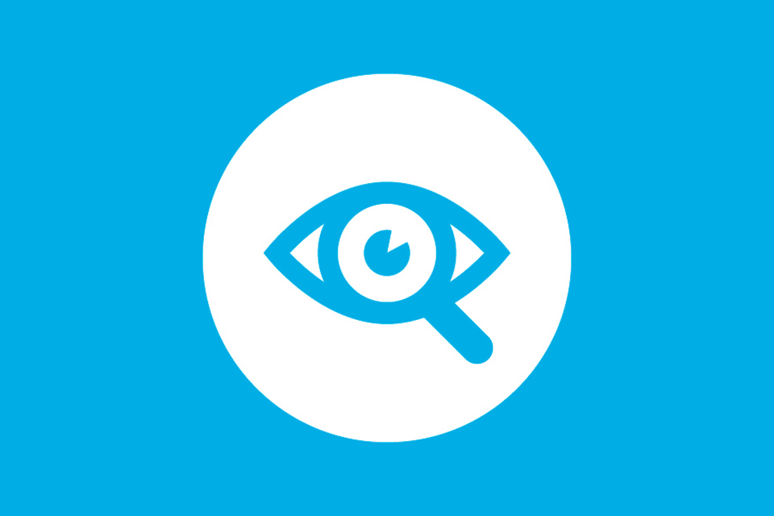
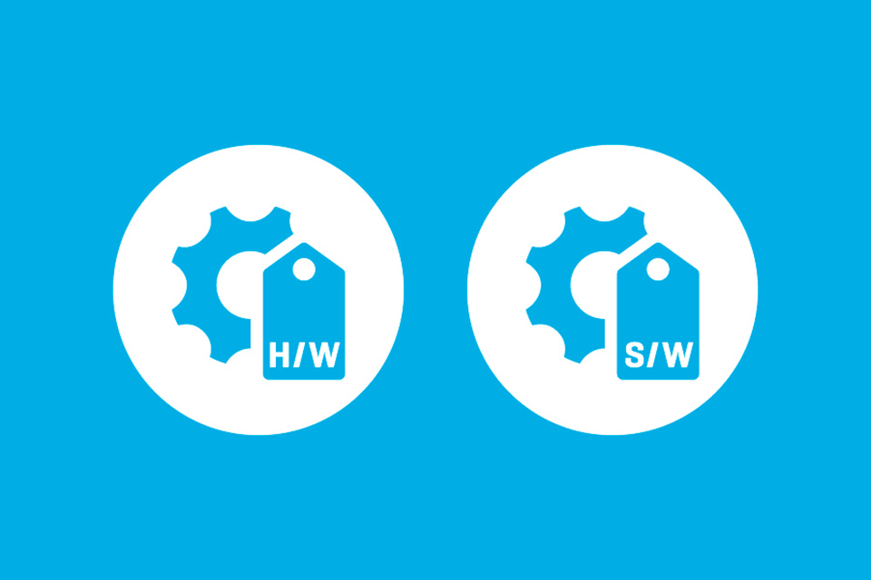
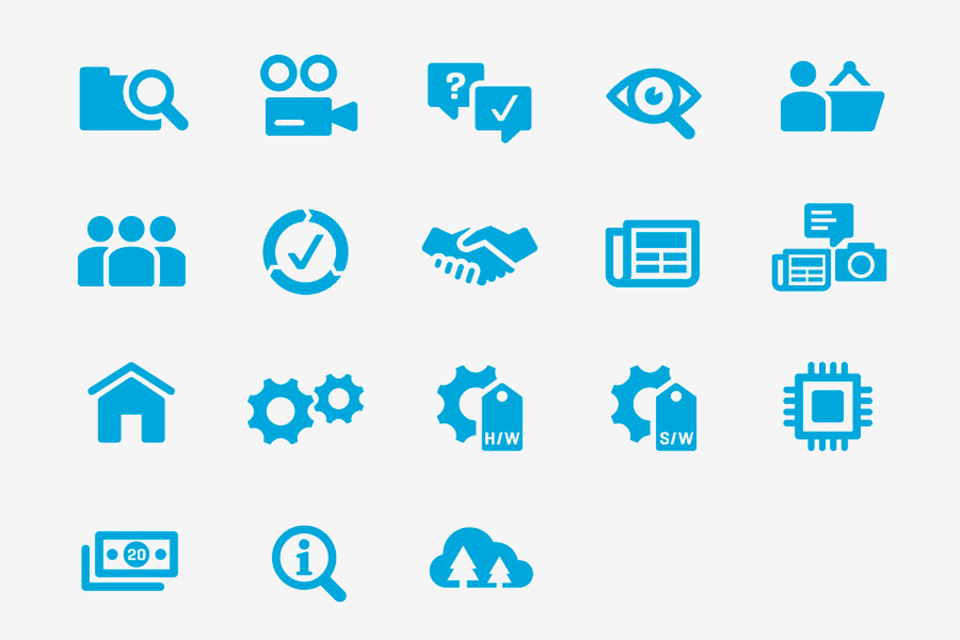
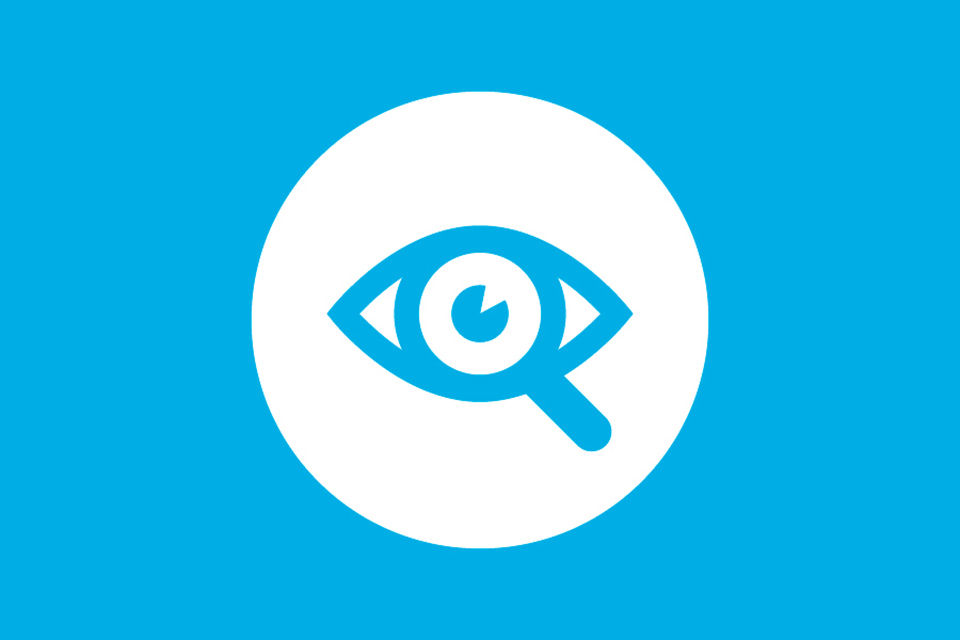
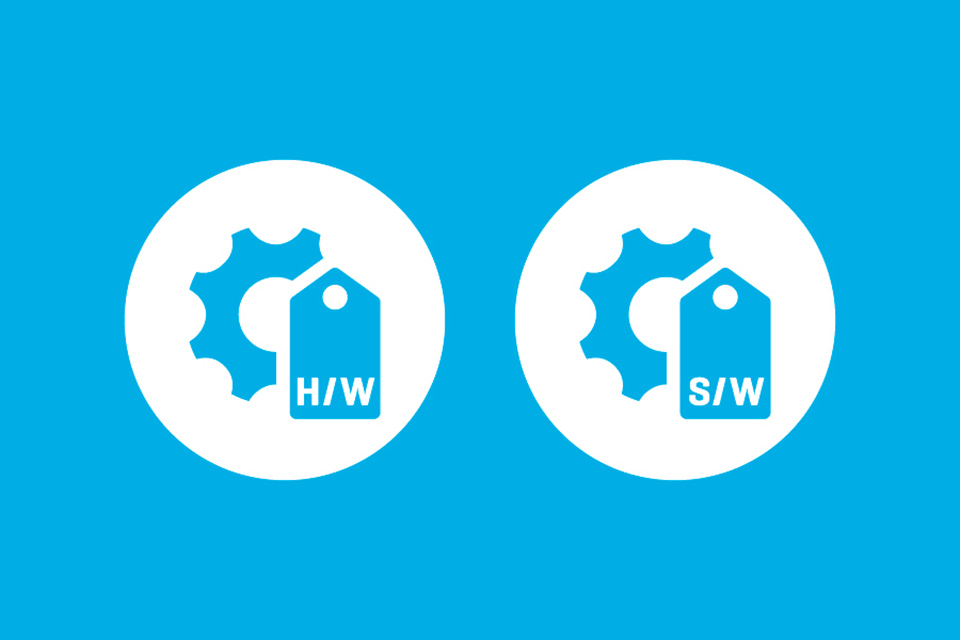
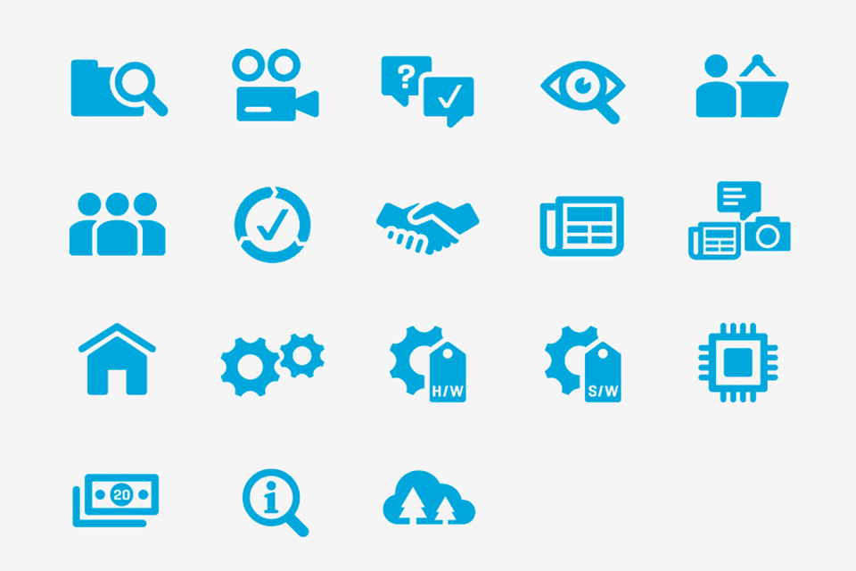

Canon icons
Canon wanted an icon system to be used for interfaces on screens and information points around the physical environment at the new Canon Experience Centre in the UK. I created this icon system and worked on the interface design while at Imagination London. More images soon.
 




